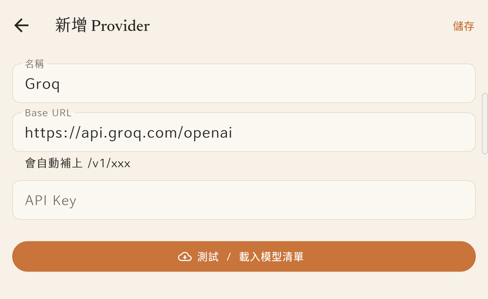
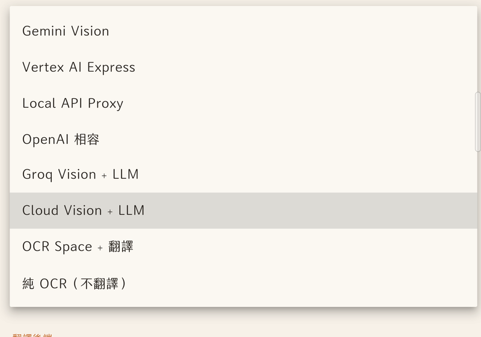
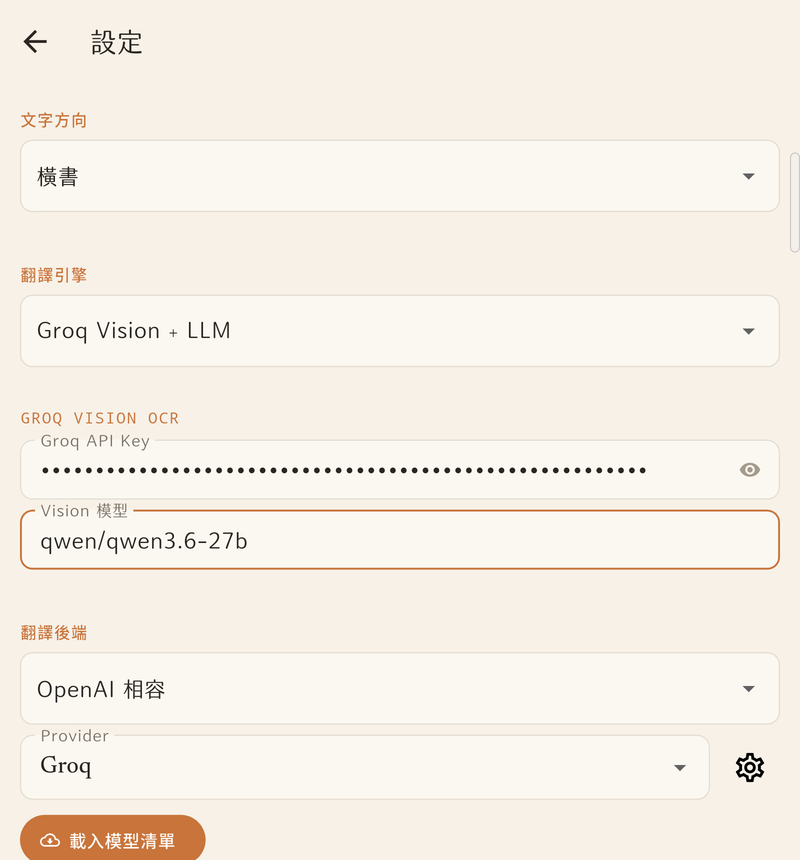
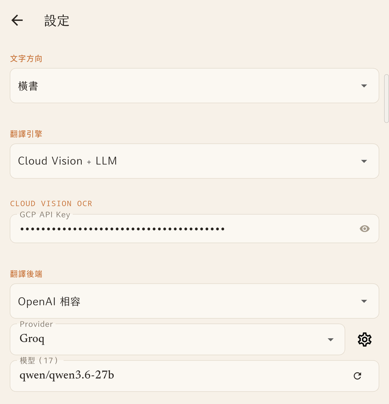
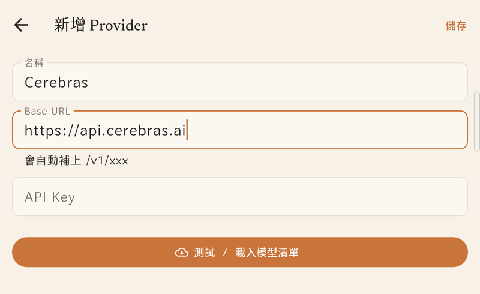

1下載與安裝 APK
最新版本
MangaLens v1.9.5
點此下載 APK
Universal APK · 77 MB · 2026-07-20 build
v1.9.0 → v1.9.5 更新重點：
① 全新整頁翻譯模式 — 閱讀器多了 ✨ 按鈕，按一下自動偵測畫面上所有氣泡、一次翻完，譯文以「嵌字風格」直接蓋在原文上（點氣泡照樣可以查字義、加生字本）。Web 閱讀器捲動後再按會逐屏累積成整條譯文；PDF／EPUB 閱讀器也支援；
② 整頁模式的前置設定：到「設定 → 翻譯引擎 → Cloud Vision + LLM」填 GCP API Key（偵測文字位置用），翻譯後端自選（Cerebras／Gemini 都行）——主引擎不用切換，整頁模式直接共用這一區設定；
③ 截圖引擎升級 PixelCopy — bomtoon 等以前「框選截下來一片空白」的網站，現在框選與整頁翻譯都能正常用了；
④ 其他：WebView 支援 Kakao／Naver 的 app 跳轉登入、紅色錯誤橫幅不再被廣告網域誤觸發；
⑤ v1.9.5：清掉開書／存檔時的除錯提示訊息，網路瞬斷自動重試——通勤時翻譯成功率更高。
安裝步驟
- 用手機瀏覽器打開上方下載連結，點右上角下載圖示存到本機。
- 打開「檔案」App，找到剛剛下載的
MangaLens-v1.9.5.apk，點開。
- 若首次安裝會跳出「允許此來源安裝未知 App」→ 點「設定」→ 開啟權限 → 回到安裝畫面。
- 點「安裝」→ 等幾秒 → 完成。
注意 — Google Play Protect 攔截：因為這是側載 APK，可能跳「Play Protect 不建議安裝」的視窗。點「仍要安裝」即可（這是 Google 對所有非 Play Store 來源的標準警告，不是病毒）。
覆蓋舊版裝不上：如果你裝過更早的版本，新版可能因為簽章不同無法直接覆蓋。
解法：先反安裝舊的 MangaLens，再裝新版。（舊版的設定不會帶過來，要重新設定 API Key）
2註冊 Groq 帳號並取得 API Key
Groq 是目前 免費額度最佛心、速度也最快的 LLM 服務商，支援 Llama / Qwen / GPT-OSS 等開源模型，最適合拿來跑漫畫翻譯。
2-1. 註冊帳號
- 用電腦或手機瀏覽器打開 https://console.groq.com
- 右上角點「Sign Up」
- 選「Continue with Google」用 Google 帳號登入（最快）
— 或用 Email 註冊也可以。
- 第一次登入會跳一些歡迎畫面，一路 Next / Skip 過就好。
2-2. 建立 API Key
- 登入後，左側選單點「API Keys」（也可以直接打開 console.groq.com/keys）
- 點右上角藍色按鈕「+ Create API Key」
- 命名隨便，建議寫「
MangaLens」方便日後辨識
- 點「Submit」→ 會跳出 Key 內容，長得像
gsk_xxxxxxxxxxxxxxxx
- 點旁邊複製圖示，整串複製起來（建議先貼到記事本，因為這個視窗關掉就再也看不到了）
重要：Groq 的 API Key 只會顯示一次，視窗關掉後就再也看不到完整 key。如果搞丟了只能刪掉重建一支。
免費額度：Groq 對所有人提供慷慨的免費額度（每日重置），個人用翻譯漫畫完全用不完。不需要綁信用卡。
3在 App 內新增 OpenAI Profile
v1.8 起的架構：把 baseUrl + apiKey 集中在「OpenAI Profile」管理，5 個功能共享同一份設定，換 key 改一次就好。
3-1. 打開設定
- 打開 MangaLens
- 右上角點齒輪 ⚙ 進入「設定」
- 找到「OpenAI Profiles」分頁（或翻到設定最下方）
3-2. 新增 Groq Profile
- 點「+ 新增 Profile」
- 填入：
- 名稱：
Groq（隨便，看得懂就好）
- Base URL：已預填
https://api.groq.com/openai（不用改）
- API Key：把剛剛從 Groq 複製的
gsk_xxxx... 整串貼進去
- 點「儲存」
- 儲存後可以點「測試連線」，成功的話會跳出可用模型清單（看到一堆 llama / qwen / openai/gpt-oss 等等就對了）

「新增 Provider」表單 — 名稱和 Base URL 已預填好 Groq，只要貼上 API Key 再按右上角「儲存」
小提醒：如果你之後想再加 OpenAI 官方、DeepSeek、Together AI 等其他兼容服務，重複以上步驟新增另一個 Profile 就好，可以共存。
4把 Profile 套到各功能
有了 Profile 後要決定每個功能用哪一個 Profile + 哪一個模型。建議第一次就先把翻譯引擎設好，其他可以之後再調。
2026-07 模型下架公告：Groq 即將停止提供 qwen/qwen3-32b 和 llama-3.3-70b-versatile。
如果你是照舊版說明設定的，請把下面所有模型欄位改成新的 qwen/qwen3.6-27b — 它是多模態模型（能看圖也能翻譯），一顆就能取代原本的視覺＋後端兩顆。
4-1. 設定主翻譯引擎（Groq Vision + LLM）
這是最推薦的設定 — Vision 模型負責看圖 + OCR，後端 LLM 負責翻譯，兩段串起來。
- 進入「設定」
- 來源語言：依漫畫選「日文」或「韓文」
- 文字方向：日漫直書多選「直書」、網漫橫向就選「橫書」
- 翻譯引擎選「Groq Vision + LLM」
- 展開後會出現「GROQ VISION OCR」區塊：
- Groq API Key：把剛剛複製的
gsk_xxxx... 整串貼進去
- Vision 模型：填
qwen/qwen3.6-27b
- 往下找「翻譯後端」區塊：
- 引擎選「OpenAI 相容」
- Provider 下拉選「Groq」（如果還沒有就點旁邊齒輪去 OpenAI Profiles 新增）
- 按「載入模型清單」，模型選
qwen/qwen3.6-27b

「翻譯引擎」下拉選單 — 主推「Groq Vision + LLM」；有 GCP 帳號的人也可以用「Cloud Vision + LLM」

Groq Vision + LLM 設定完成的樣子 — Vision 模型填 qwen/qwen3.6-27b，翻譯後端 Provider 選 Groq

按「載入模型清單」後，「模型」欄會出現下拉選單 — 選 qwen/qwen3.6-27b（圖中翻譯引擎為 Cloud Vision + LLM，Groq Vision + LLM 的後端設定完全相同）
e-ink 用戶：最上面有「大字介面」開關，打開後字級和工具列圖示會放大，Supernote / Boox 等觸控有點難精準的裝置很好用。
4-2. 各功能 Profile 對應表
| 功能 | Profile | 建議模型 |
|---|
| 主翻譯引擎（Vision） | Groq | qwen/qwen3.6-27b |
| 後端翻譯模型 | Groq | qwen/qwen3.6-27b
或 Cerebras 的 gemma-4-31b（見第 5 節） |
| 辭典查字 | Groq | qwen/qwen3.6-27b
或 Cerebras 的 gemma-4-31b |
| OCR 翻譯（兩段式） | Groq | qwen/qwen3.6-27b
或 Cerebras 的 gemma-4-31b |
一顆模型全包：qwen/qwen3.6-27b 是多模態模型 — 看圖 OCR 和純文字翻譯都做得來，所以視覺和後端可以填同一顆，不用像以前分兩顆記兩個名字。
它同時也是會「思考」的推理模型：v1.8.1 起 App 會自動要求它跳過思考直接作答，不會再把一大串思考過程當成翻譯結果吐出來，回應速度也更快。
5加開 Cerebras（gemma-4-31b）— 第二家免費服務商
Cerebras 是做「晶圓級 AI 晶片」的公司，推理速度是出了名的快，而且免費額度同樣佛心：每天 100 萬 tokens、不用綁信用卡。
上面的 gemma-4-31b（Google 開源的 Gemma 4 多模態模型）翻譯效果很不錯，很適合當 Groq 之外的第二選擇 — Groq 額度用完、塞車，或想比較不同模型的譯文風格時，一鍵就能切過去。
5-1. 註冊帳號
- 用瀏覽器打開 https://cloud.cerebras.ai
- 點「Sign Up」，用 Google 帳號登入最快（Email 註冊也可以）
- 不需要信用卡、不用排隊等開通，註冊完就能用
5-2. 建立 API Key
- 登入 Cloud Console 後，點左側選單的「API Keys」
- 點「+ Create Key」，名稱建議填
MangaLens
- 複製產生的 Key（開頭是
csk-），先貼到記事本存好
5-3. 在 App 內新增 Cerebras Profile
- 設定 → OpenAI Profiles → 點「+ 新增 Profile」
- 填入：
- 名稱：
Cerebras
- Base URL：
https://api.cerebras.ai（App 會自動補上 /v1/...）
- API Key：貼上剛剛的
csk-xxxx...
- 點「儲存」→「測試連線」，看到
gemma-4-31b 等模型出現就成功了

Cerebras Profile 填好的樣子 — Base URL 填 https://api.cerebras.ai，貼上自己的 API Key 後按「儲存」
5-4. 套用到翻譯功能
- 「翻譯後端」（或辭典引擎）選「OpenAI 相容」
- Provider 下拉改選「Cerebras」
- 按「載入模型清單」，模型選
gemma-4-31b
gemma-4-31b 也是多模態模型（收得了圖片），所以把「翻譯引擎」整個切成「OpenAI 相容」、Provider 選 Cerebras，讓它直接看圖翻譯也行。
免費額度與限制：每天 100 萬 tokens（每日重置）、每分鐘最多 5 個請求／30K tokens，免費層 context 為 65K。
框選翻譯一格漫畫用不了多少 tokens，額度很夠用；但如果連續框選得太快撞到「每分鐘 5 次」的限制，等個一分鐘再翻就好。
Groq vs Cerebras 怎麼選？平常用 Groq（速率限制較鬆、機種選擇多）；Groq 當天額度用完、或想換個譯文風格時切到 Cerebras。兩家都免費，建議兩個 Profile 都設起來，隨時可切換。
6正式使用 — 框選翻譯漫畫
6-1. 開啟漫畫 — 兩種模式
MangaLens 讀漫畫有兩種模式：
A. 本地書庫（手機裡有 EPUB / PDF）
- 首頁右下角點橘色「+ 匯入」按鈕
- 選手機裡的 EPUB 或 PDF 檔
- 匯入後點封面就會打開閱讀器
B. 內建瀏覽器（線上漫畫網站）
- 首頁右上角點 🌐 地球圖示 進入內建瀏覽器
- 網址列輸入漫畫網站，按 Enter
- 跟本地書庫一樣框選翻譯，氣泡會跟著頁面捲動
被網站 Cloudflare 擋住？跳「我不是機器人」驗證時，按瀏覽器右上角 ⋮ 選單 → Cloudflare 驗證，過完就能正常看。
6-2. 框選翻譯（核心操作）
不管在書庫或瀏覽器，都有兩種方式進入框選：
- 方法 A：長按畫面 → 手指拖出一個方框，框住要翻的文字
- 方法 B：點右下角橘色 FAB（剪裁圖示）→ 再拖曳框選
- 放手後會跳出「辨識中…」提示
- 等 2-5 秒（看模型速度）
- 翻譯完成 → 半透明氣泡會浮在原圖上，疊在對應位置
長按沒反應？有些網頁會把長按事件吃掉，直接用右下角橘色 FAB 進框選模式就好。
6-3. 點氣泡開啟功能視窗
點任何一顆翻譯氣泡，會從底部滑出操作視窗：
- 標題列：顯示翻譯結果（例：「真的好開心喔」）
- 原文區：顯示 OCR 出來的原文，已用空白把詞拆好（例：「楽に 実に しみだ」）
- 點擊單字 → 查字義（會用辭典引擎查）
- 長按單字 → 拆解該詞的字根／組成
- 底部四個按鈕：
- 📋 複製 — 把翻譯結果複製到剪貼簿
- ✏️ 編輯 — 手動修改翻譯文字（修錯字、調語氣都行）
- 🔄 重譯 — 對同一塊原文再翻一次（換個說法）
- 🗑 刪除 — 清掉這顆氣泡
6-4. 翻譯氣泡的三個手勢
- 👆 點一下：打開翻譯詳情視窗（就是 6-3 那個）
- 👆👆 點兩下：直接關掉這顆氣泡
- ✊➡️ 長按拖曳：移動氣泡位置，拖錯按「復原」
省 token 小技巧：盡量只框「對話框」而不是整頁。雖然全頁也能翻，但小範圍翻譯品質更好、速度更快、用量更少。
7進階功能
7-1. 📖 查字義
- 點翻譯氣泡開啟「功能視窗」（見 6-3）
- 在「原文」區，點擊任一單字 → 查字義
- 會跳出該字的讀音、字義、詞性、例句
- 進階：長按單字可以拆解該詞的字根組成
7-2. 📝 生字本（匯出給 Anki 複習）
- 查完字後在辭典視窗點「加入生字本」
- 主畫面進「生字本」可以隨時複習
- 支援匯出 CSV → 丟進 Anki 排程複習
7-3. 📙 術語表（固定譯名）
角色名一直被翻錯？加進術語表就解決：
- 例：把「ナルト」固定翻成「鳴人」、「キン肉マン」固定翻成「金肉人」
- 在閱讀畫面的選單裡可以打開術語表
- 之後翻譯會優先採用你定的譯名
7-4. 💬 翻譯指引（調語氣／風格）
可以給 AI 一句提示來調整翻譯風格，例如：
BL 漫畫，語氣要曖昧一點棒球漫畫，請用台灣棒球用語古風武俠，避免現代口語
7-5. 🔄 上下文記憶
App 會自動記住前 5 筆翻譯，讓後面翻出來的角色名、稱呼、語氣保持一致 — 不用額外設定，預設就開著。
?常見問題
Q1：翻譯結果一直跳「請求失敗」
- 檢查 Profile 的 API Key 有沒有貼錯（前後不能有空白）
- 到 Groq Console 看 Key 還在不在、有沒有被停用
- 選的模型可能下架了 — 進 OpenAI Profile 重新 fetch 模型清單，挑現有的
Q2：翻譯品質不好
- 後端翻譯模型可在 Groq 的
qwen/qwen3.6-27b 和 Cerebras 的 gemma-4-31b 之間切換比較（見第 5 節）
- 框選範圍縮小，一次只翻一個對話框
- 名詞翻錯 → 用術語表固定譯名（見 7-3）
- 語氣不對 → 用翻譯指引下提示（見 7-4）
- 或考慮加錢用 Gemini 2.5 Pro / GPT-4o 系列
Q3：翻譯結果吐出一大串英文「思考過程」？
Qwen 這類推理模型會先「想」再答，舊版偶爾會把整段思考鏈（<think>...</think>）當成翻譯顯示出來。
升級到 v1.8.1 就好 — 新版會從源頭要求模型跳過思考，就算模型硬要想也會自動過濾掉，翻譯速度還會變快。
Q4：可以離線用嗎？
不行。所有翻譯引擎都需要連網呼叫 LLM API。但讀漫畫本身（不開翻譯）可以離線。
Q5：圖會被上傳嗎？隱私如何？
你框選的圖片區塊會傳到你設定的那家 LLM 服務商（例如 Groq）。MangaLens 本身不會收集或上傳你的資料 — 只在你選的 Profile 和該家服務商之間直接通訊。
Q6：免費用到爆 Groq 額度怎麼辦？
- Groq 每日重置免費額度，隔天就回來了
- 把翻譯後端切到 Cerebras 的 gemma-4-31b（見第 5 節）— 額度分開計算，每天也有 100 萬 tokens
- 或新增第二個 Profile 接 Gemini AI Studio（也有免費額度）
- 或加錢升級 Groq 付費方案